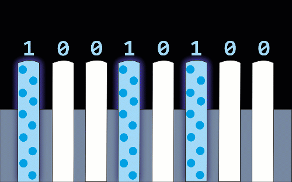

Antes de comenzar a explicar lo que son los tipos de datos, vamos a hacer una pausa y vamos a ver algunos conceptos previos para poder comprender mejor lo que estamos haciendo.
Los ordenadores solo entienden un lenguaje, un montón de combinaciones de ceros y unos. Por ejemplo, Hola mundo, nuestra máquina lo guardaría de esta manera: 01001000
Esto es debido a que el ordenador es un componente electrónico y, para procesar la información, utiliza la corriente eléctrica donde 1 representará la presencia de corriente y 0 la ausencia de corriente. En este ejemplo, se pueden llegar a representar los números que van desde el 0 al 255 combinando ceros y unos según sea el número.
Esto ya nos da una pista de cómo nuestro ordenador procesará los números. Por ejemplo, si quisiéramos representar el número 1, tendríamos el valor 00000001; el número 2, 00000010; el 3, 00000011 y así sucesivamente.
En este ejemplo tenemos un total de 8 bits (1 byte) para almacenar el valor que queremos guardar, es decir un total de 256 combinaciones diferentes (28). Y es por esto que surge la necesidad de indicar el tipo de dato que estamos utilizando ya que, según el tamaño que necesitemos, podríamos necesitar 16 bits, 32 bits, etc.
Para representar tipos de datos enteros en Java, tenemos las siguientes opciones:
Está bien poder usar números enteros, pero si necesitamos tener más precisión e incluir una parte no entera, tendremos que utilizar otro tipo de dato numérico.
Los tipos de dato carácter en Java, representan a un carácter del código UNICODE de 16bits. Ya que es esto lo que ocupa un solo carácter.
Para hacernos una idea, de todos los símbolos que podemos tener podremos visitar el siguiente enlace:
http://www.unicode.org/charts/
Aunque lo interpretemos como un símbolo, éste en realidad es un dato numérico, por ejemplo, la 'a' minúscula, es el número 97 en decimal, pero si lo miramos en la tabla UNICODE, nos encontramos con el valor 61. Esto es debido a que está en base hexadecimal y no decimal. Por lo que, si queremos trabajar con ellos o bien, interpretamos el valor directamente en hexadecimal, o bien, lo transformamos a decimal. Ya se profundizará más cuando empecemos a operar con ellos.

Un booleano es un tipo de dato que sólo admite dos valores posibles true (verdadero) y false (falso). Por lo tanto para esto, bastará con 1 bit (1 para true y 0 para false).
Una vez que hemos visto los tipos de datos existentes en Java, deberemos de centrarnos ahora en qué es un literal.
Un literal es un valor constante, que este puede ser de un tipo de dato u otro. Es decir, 23 sería un literal numérico entero, 'a' sería un literal carácter, true un literal booleano...
Al principio, vimos que existían cuatro tipos de datos para los números enteros. Cuando queramos usar estos tipos de datos, podremos escribir los literales de las siguientes formas:
Normalmente, los números con los que trabajaremos en Java, serán escritos en base 10, así que no tendremos muchos problemas para interpretar qué número estamos usando. Aunque sí que es cierto, que en ocasiones, se utilizarán las otras bases.
Éstos representarán los números que tienen coma flotante que, como vimos, corresponden a los tipos de datos float y double.
Para representar un literal de tipo carácter, deberemos escribirlo entre comillas simples, por ejemplo 'a' o 'A'.
Hay que tener en cuenta que solo está permitido un carácter para representar el literal y no podremos incorporar más caracteres. Por ejemplo, 'as' no sería un literal de tipo carácter ya que, entre comillas, se encierran dos caracteres.
Pero como ya sabemos, cada carácter tiene un número asociado a él, así que, podremos también representarlo con el número colocando al inicio la secuencia de escape \u indicando que es el valor numérico del carácter en UNICODE, es decir '\u0061' representaría el carácter a.
Para representarlos solo tendremos dos opciones disponibles true o false, sin ningún tipo de comillas, ni simples, ni dobles. Si envolviéramos el booleano en comillas dobles, sería reconocido como una cadena de caracteres y no como tal.
Realmente este literal es un tipo de dato estructurado, ya que está compuesto por varios caracteres. Pero como es tratado igual que los tipos de datos simples para operar, se le suele incluir en esta sección. Ya que, cuando se modifica aunque sea un sólo carácter, éste se destruye y se crea uno completamente nuevo.
Para identificarlo como tal, se debe de envolver entre comillas dobles ". Por ejemplo "Hola Mundo".
Los literales no se pueden modificar. Cuando los usamos, si por ejemplo, al 23 tenemos que sumar una unidad, éste no se transformará, sino que se destruirá el 23 y en su lugar, se introducirá el 24. Porque literalmente el 23 es un número completamente diferente al 24.
| Tipo de dato | literal |
|---|---|
| byte | 10 |
| 010 | |
| x010 | |
| short | 10 |
| 010 | |
| 0x16 | |
| int | 10 |
| 010 | |
| x010 |
| Tipo de dato | Literal |
|---|---|
| long | 10L |
| 010L | |
| 0x10L | |
| float | 10.2f |
| 10F | |
| double | 10.2 |
| 10.1d | |
| 10.2D | |
| char | '/u000' |
| boolean | true |
| false |